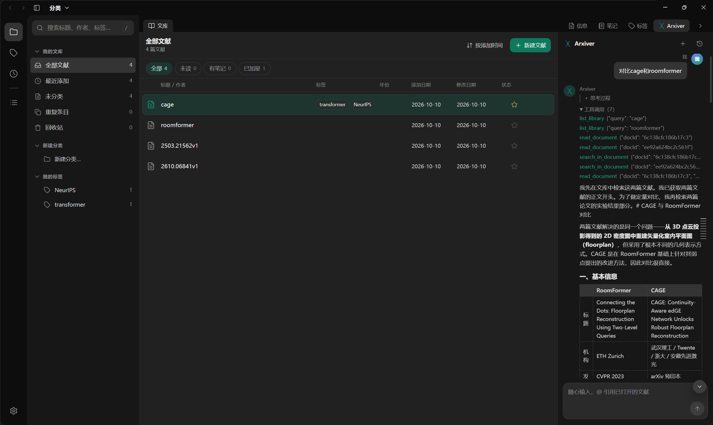
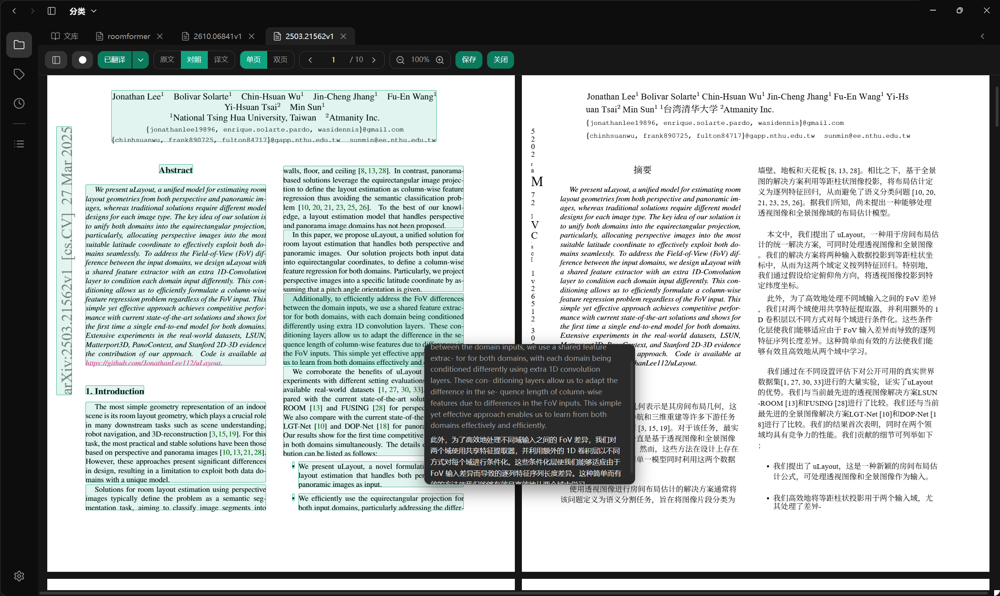
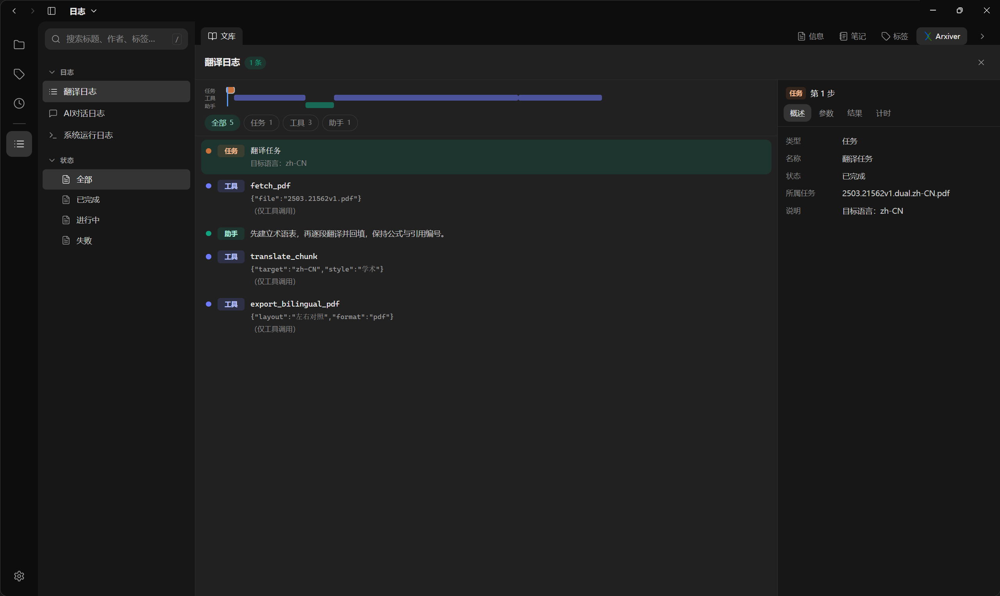

在桌面端翻译 arXiv 论文
导入本地或 arXiv PDF，在原文 / 对照 / 译文三视图中逐页阅读译文。内置本地翻译模型，离线完成、无需 API Key。
$ Arxiver
[engine] bundled · PyMuPDF + translate engine
[model ] DeepSeek (OpenAI-compatible)
[open ] 2211.15658v2.pdf en → zh-CN
[DONE] 15/15 pages ▸ bilingual ready
[engine] bundled · PyMuPDF + translate engine
[model ] DeepSeek (OpenAI-compatible)
[open ] 2211.15658v2.pdf en → zh-CN
[DONE] 15/15 pages ▸ bilingual ready
原文 / 对照 / 译文 三视图 · 块框 段落级溯源 · Arxiver 助手（引用跳转 / 跨文献）



核心特点
- 桌面文献库 — 导入、分类、标签、回收站、阅读历史与检索；文件与本机数据不出本机。
- 双语对照阅读器 — 原文 / 对照 / 译文三视图，单页 / 双页、缩放、目录大纲与缩略图、页面主题（护眼 / 米黄 / 暗色）。
- 内置本地翻译（离线） — 随应用分发 HY-MT 翻译模型（llama.cpp），安装即用、无需 API Key、离线完成；有 NVIDIA 显卡走 GPU，无独显自动回退 CPU。
- 段落块框与引用 — 原文页叠加段落矩形，悬停显示「原文 → 译文」；悬浮引用预览目标页、点击跳转。
- Arxiver 助手 — 基于当前文章与整库的对话式检索，回答带可点击引用；可跨文献、
@引用已打开文献，并可执行标签 / 元数据等写操作（需确认）。使用独立配置的在线接口，与翻译互不影响。 - 差量自动更新 — 内置自动更新，只下载变化的块；未变的大文件（如引擎）不会重复下载。
下载
- Windows 安装包 — 双击向导安装，开箱即用。前往 Releases →
- 安装并启动 运行
Arxiver Setup vX.exe（内置翻译引擎与本地翻译模型）。 - 直接翻译 开箱即用：本地模型离线翻译，无需 API Key。
- 导入并翻译 导入本地 PDF 或 arXiv 链接，打开后点「翻译」，在阅读器里切换 原文 / 对照 / 译文。
- （可选）配置助手 需要对话式助手时，在「设置 → AI 助手」填入 OpenAI 兼容接口。
- 源码（开发者） — 克隆仓库后进入
electron-app/：npm install→npm run dev。查看仓库 →